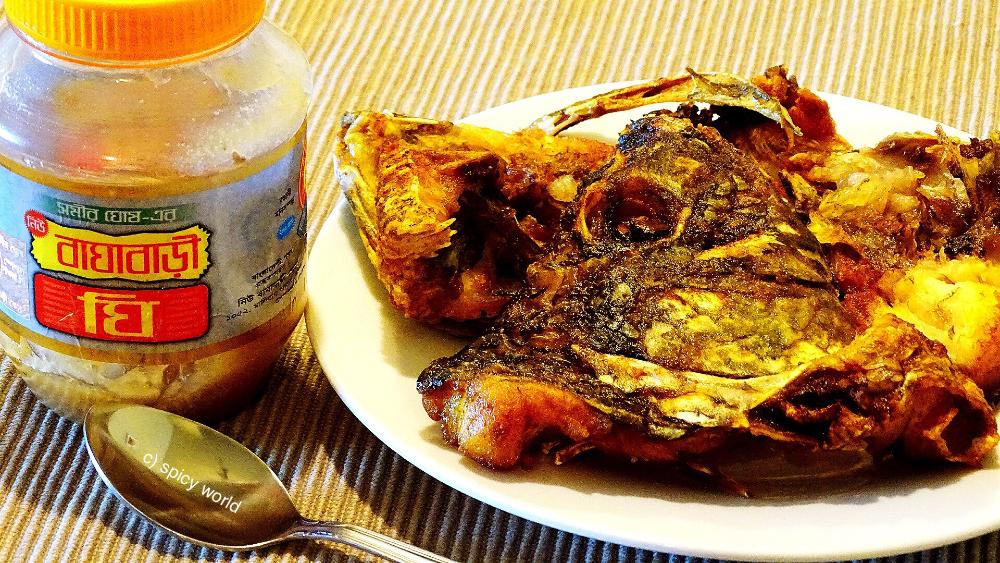
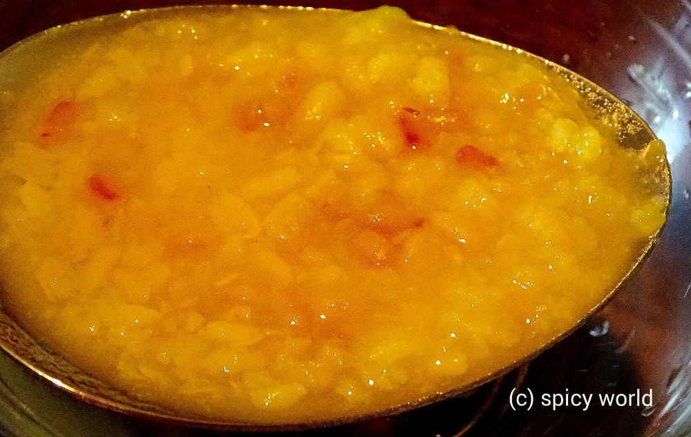
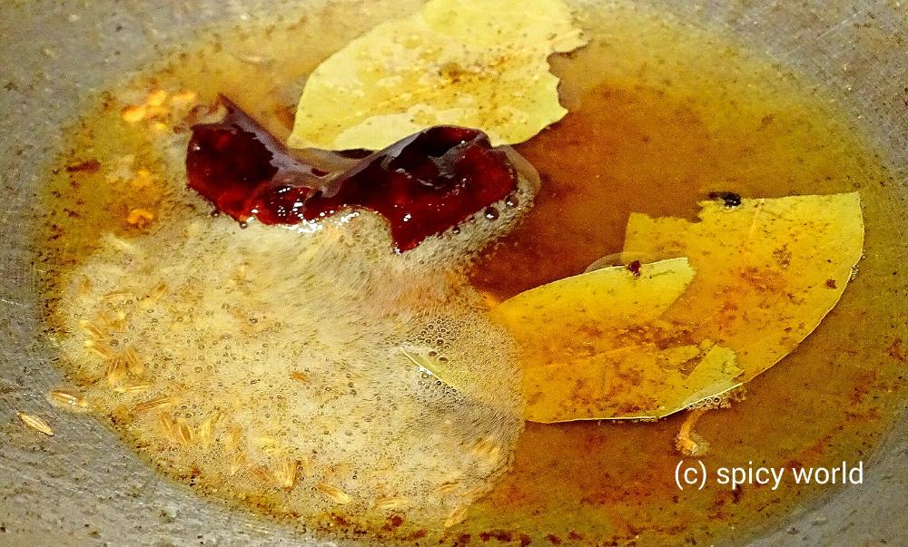
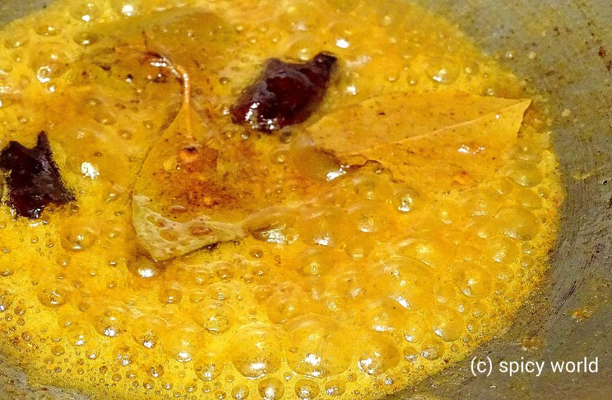
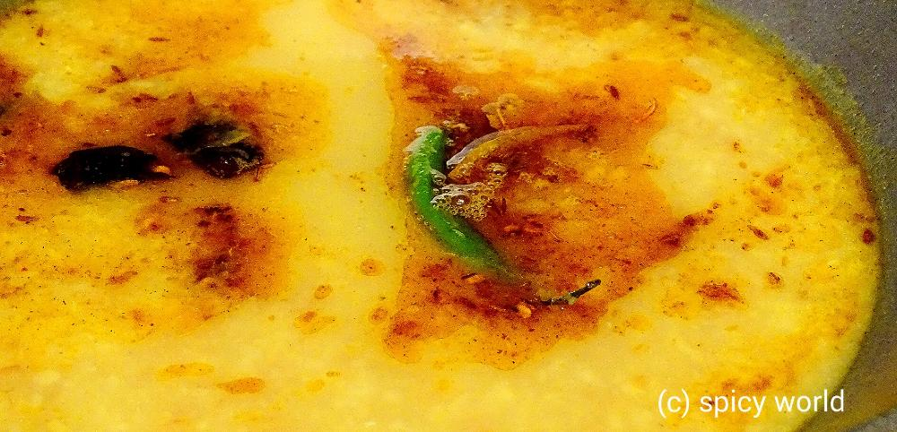
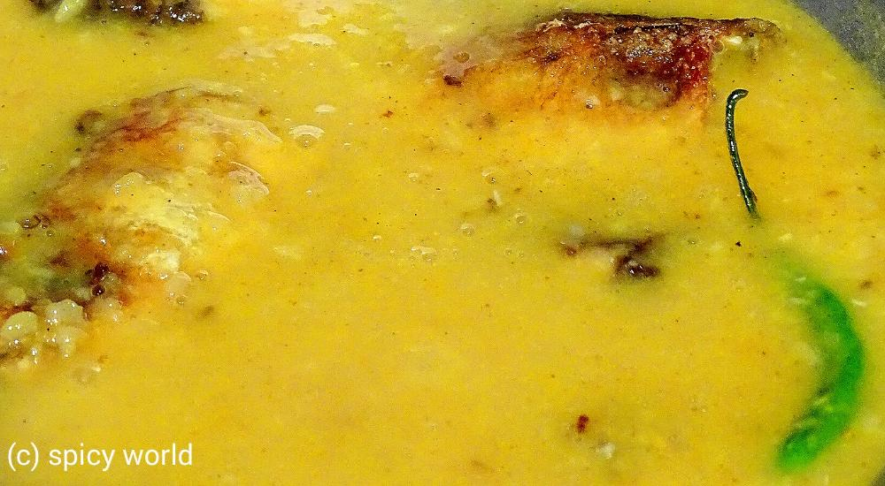

Macher Muro die Muger Daal (Fish head cooked with spicy lentil soup)
This lentil soup is one of the traditional food in Bengal. Last weekend I had two fish heads in my fridge. I am personally not too much fond of plain fish head curry. So, I made this dish and it came out really perfect like 'biyebari'. In most of the bengali wedding this dish is must for lunch and everybody loves it. I ate the home made version of this daal twice from my mom. Those times I really didn't find difference because she made it so tasty and this time 'he' didn't find any difference 😃. Lets see how I made this 'daal' and don't forget to try it in your kitchen.
")
Ingredients
- 1 cup yellow lentil / moong daal.
- 2 big fish heads.
- Whole spices (1 Teaspoon cumin seeds, 1 bay leaf,1 dry red chilli, 3 green cardamoms).
- 1 Teaspoon ginger paste.
- Spice powder (1 Teaspoon turmeric powder, 1 Teaspoon red chilli powder, ½ Teaspoon cumin powder).
- 2 Teaspoons garam masala powder.
- ½ cup mustard oil.
- 1 Teaspoon extra turmeric powder for 'daal' and 'fish fry'.
- Salt and sugar.
- 2 green chilies.
- 2 Teaspoons ghee / clarified butter.
- Warm water.
")
Steps
Dry roast the lentil or daal in pan for 10-12 minutes. When you get nice falvour, turn off the heat and let it cool down.

After cooling down, wash the 'daal' properly with water and boil, till it become soft, with a cup of water. Add ½ Teaspoons tumeric powder, some salt and 2 pinches of sugar in it.

Wash the fish heads and marinate those with some salt and turmeric powder for 20 minutes.
Then heat mustard oil in a kadai. Fry the fish heads both sides till those becomes golden in color.
After frying remove those from the oil and let it cool down.

At this point you can break the fish heads into 3-4 pieces.
Now in the remaining oil or you can discard some oil from the pan, add the whole spices. Saute it.

Then add ginger paste, all the above mentioned spice powder, 1 Teaspoon garam masala and 3 Tablespoons of water. Mix it very well for 3 minutes.

Then add the green chilies and boiled daal or lentil. Mix it and add some salt, sugar. If it becomes too thick add some warm water.

Then add the fried fish heads. Cook this for 10-15 minutes.

Before turn off the heat add ghee and 1 Teaspoon garam masala powder.
Your macher muro die Muger daal is ready ...
- Enjoy this hot with some steamed plain rice.
 (Final)")